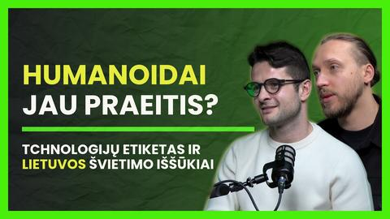

Alanai,
ačiū, kad pasikvietei mus į savo studiją. Po pokalbio norėjome atsidėkoti tuo, ką mokame: pažiūrėti į tavo kanalą tavo žiūrovų akimis.
Visų pokalbių patys nebūtume perklausę (kanale jau 61 valanda pokalbių), todėl skaičius ir komentarus padėjo perskaityti dirbtinis intelektas. Viskas čia remiasi viešais YouTube duomenimis ir tuo, ką žiūrovai patys parašė. Galime ir suklysti, tad jei kas atrodo ne taip, pasakyk.
Stipriausia išvada: žiūrovai tau dėkoja už svečius specialistus, kurie kalba paprastai ir tiesiai, ir už tai, kad pats atsakai į jų komentarus. Visa kita šioje dovanoje yra apie tai, kaip šią stiprybę parodyti dar daugiau žmonių.
Kristijonas ir Džiugas
Trys dalykai, jei skaitysi tik vieną skyrių
Gydytojas su kasdieniu klausimu
10 pokalbių, kurių pavadinime yra „Gyd.“, mediana yra 4 333 peržiūros. Viso kanalo mediana 1 488, tad beveik tris kartus mažiau.
Ką daryti: laikytis šios formulės: specialistas ir kasdienis klausimas, kurį žiūrovas jau turi.
Grįžęs svečias pralenkė visus
Antrasis pokalbis su Vilhelmu Džiugeliu (2026-11-02) yra kanalo rekordas: 27 230 peržiūrų, 864 ♥ ir 69 komentarai. Dar 10 komentarų prašo antro pokalbio su penkiais kitais svečiais.
Ką daryti: antras pokalbis su prof. Osvaldu Rukšėnu. Jo prašo 4 komentarai, daugiausia kanale.
Didžiausi pokalbiai laukia savo klipų
Kanale 34 trumpi klipai, tipinis surenka 300 peržiūrų. Geriausias (1 023) surinko 2,5 karto daugiau peržiūrų nei pats pokalbis (402). Keturi žiūrimiausi pokalbiai kartu turi 65 570 peržiūrų, ir juose dar daug minučių, tinkamų klipams.
Ką daryti: po du ar tris klipus iš abiejų Džiugelio pokalbių ir iš Januškevičiūtės pokalbio.
Kuris pokalbis ką laimėjo
Paspausk mygtuką ir pažiūrėk, kaip keičiasi lyderiai. Paspausk pokalbį, kad pamatytum daugiau.

„AI, ateities įgūdžiai ir robotai“ (2026-11-11). Pokalbiui vos kelios valandos, todėl jo su kitais nelyginame ir skaičiuose jo nėra.
Meilė čia reiškia, kiek ♥ tenka 100 peržiūrų. Raidė kairėje rodo kryptį (kūnui, sielai, protui), ją priskyrėme mes. Dauguma 2025 m. rudens pokalbių pirmiausia buvo rodomi ankstesniame tavo kanale, todėl čia matoma tik dalis jų peržiūrų. Skaičiai iš viešo YouTube, 2026-11-11.
Daug žiūrėti ir labai mylėti nėra tas pats
Kiekvienas taškas yra vienas pokalbis. Kuo toliau į dešinę, tuo daugiau žiūrėjo. Kuo aukščiau, tuo labiau mylėjo. Didesnis taškas reiškia daugiau komentarų.
Žiūrovai dėkoja ir klausia toliau
Temos suskaičiuotos pagal raktažodžius, todėl apytiksliai. Vienas komentaras gali patekti į kelias temas. Skaičiuoti tik žiūrovų komentarai (350), be tavo atsakymų.
Ką jie rašo
Citatos be vardų, kai kur sutrumpintos, sutvarkyta rašyba. Po citata nurodytas pokalbio svečias.
Ko žiūrovai patys prašo
✅ jau daroma · 🟡 kartais daroma · ⬜ dar galima pradėti
Ką bendro turi labiausiai žiūrėti pokalbiai
Paspausk kortelę ir pokalbis atsidarys YouTube svetainėje. „Kodėl suveikė“ yra mūsų spėjimas.
Kur eina žiūrovai tarp tavo trijų krypčių
Kiekvieną pokalbį priskyrėme vienai iš krypčių, kurias matome tavo kanalo viršelyje. Priskyrimas mūsų, todėl kai kur galima ginčytis.
Ką tai reiškia: sielos pokalbius žiūrovai myli lygiai taip pat kaip sveikatos (po 4,7 ♥ iš 100), tik juos mažiau žiūri. Sielos tema su sveikatos kampu pavadinime gali pasiekti daugiau žmonių. Tai hipotezė, verta vieno bandymo.
34 trumpi klipai
Klipų serija „#N Protui / Kūnui / Sielai“ prasidėjo 2025 m. lapkritį. Tipinis klipas surinko 300 peržiūrų, visi kartu 11 804.
- Geriausias klipas: „#17 Protui“ su Anželika Laužikiene, 1 023 peržiūros. Pats pokalbis surinko 402.
- Laukia savo klipų: keturi žiūrimiausi pokalbiai (abu su Džiugeliu, su Januškevičiūte ir su Girdzijausku). Kartu jie surinko 65 570 peržiūrų.
- Pavadinimai: visų klipų pavadinimai yra vieno formato (numeris, kryptis, vardas), todėl iš duomenų negalime pasakyti, kokie pavadinimai veikia geriau. Verta išbandyti klipą su tema pavadinime, pavyzdžiui, „Kodėl vieni serga nuolat?“ hipotezė
Pavadinimų dvikova
Penkios poros tikrų tavo pokalbių. Paspausk tą, kuris, tavo manymu, surinko daugiau peržiūrų. Peržiūros priklauso ir nuo svečio, ir nuo to, kada pokalbis atsirado kanale, todėl paaiškinimai yra spėjimai.
Klausimai, kuriuos žiūrovai paliko komentaruose
Kiekvienas tinka trumpam klipui, prisegtam komentarui ar klausimui kitam svečiui. Perrašyta trumpai, be vardų.
- Kaip padidinti skrandžio rūgštingumą?Džiugelis 2026 · 3 komentarai apie tai
- Kodėl serga vaikai, jei jie dar nespėjo įgyti blogų įpročių?Džiugelis 2026 · 2 ♥
- Kaip susitvarkyti miegą?Džiugelis 2026 · atsakei nuoroda į Laurą Bojarskaitę
- Ką daryti, jei artėja 40 ir testosterono lygis krenta?Ringys
- Ką gydytojas mano apie pieno produktus?Džiugelis 2026
- Ar plaukimas irgi tinka kaip kasdienis judėjimas?Kalvaitis
- Kaip dažnai pirmoji diagnozė būna klaidinga?Urbonas · onkologija
Kaip panaudoti: vienas klausimas, paverstas prisegtu komentaru su atsakymu ir laiko žyma, parodo žiūrovui, kad jis buvo išgirstas.
Ko žiūrovai prašo, o kanale dar mažai
Suskaičiuota iš pavadinimų ir komentarų, todėl apytiksliai. Kitų platformų netikrinome.
Antri pokalbiai su mėgstamais svečiais
10 komentarų prašo tęsinio: Rukšėnas (4), Darinskas (2), Kobs (2), Viršutis ir Kalvaitis (po 1). Džiugelio sugrįžimas tapo kanalo rekordu.
Formatas: 2 dalis su klausimais iš komentarųMiegas
6 komentarai kalba apie miegą, o kanale apie jį vienas pokalbis (Laura Bojarskaitė, 997 peržiūros). Kai žiūrovas paklausė, pats nukreipei pas ją.
Formatas: antras pokalbis su miego specialisteSportas ir treniruočių mokslas
Žiūrovai siūlo Marių Blaževičių (4 komentarai) ir prof. Albertą Skurvydą (2). Kanale apie sportą 3 pokalbiai: Ringys, Zagainova, Narkevičius.
Formatas: treneris ir mokslininkas viename pokalbyjeKvėpavimas
2 komentarai klausia apie kvėpavimo praktikas. Kanale tokio pokalbio dar nėra.
Formatas: pokalbis su pratimu eteryjeVaikai ir paaugliai
Kanale 4 tokie pokalbiai, neskaitant mūsų. Pokalbis apie paauglių lytiškumą surinko 15 248 peržiūras, antras pagal dydį kanale.
Atskleidžiame: Kristijonas ir Džiugas yra Robotikos akademijos ir ExoClass bendraįkūrėjai, todėl temose apie vaikus ir būrelius nesame neutralūs.
Mūsų tema · šališkaSvečiai, kuriuos pasiūlė patys žiūrovai
Sąrašą sudarė žiūrovai, mes tik suskaičiavome.
Keturi maži žingsniai
Tu jau darai tai, ką daro stiprios laidos: laiko žymos kiekviename aprašyme nuo 2025 m. lapkričio, skyrius „Klausimas žiūrovams“ 10 pokalbių aprašymuose, kvietimas siūlyti svečius kiekvieno pokalbio aprašyme ir 51 tavo atsakymas žiūrovams komentaruose.
Antras pokalbis su Osvaldu Rukšėnu
Jo prašo 4 komentarai. Džiugelio sugrįžimas (27 230 peržiūrų) rodo, kad žiūrovai laukia pažįstamų svečių.
Klipai iš žiūrimiausių pokalbių
Po du ar tris klipus iš abiejų Džiugelio pokalbių ir iš Januškevičiūtės pokalbio. Kartu jie surinko 54 091 peržiūrą, tad medžiagos klipams čia daugiausia.
Svečio kontaktas prisegtame komentare
7 žiūrovai klausė, kaip patekti pas svečią gydytoją (29 ♥). Vienas prisegtas komentaras atsako visiems iš karto.
Žiūrovo klausimas, atsakytas klipu
40 žiūrovų komentarų yra klausimai. Klipas, prasidedantis žodžiais „Žiūrovas klausė…“, kviečia klausti dar daugiau.
Šaltiniai žiūrovams iš mūsų pokalbio
Galima įklijuoti į pokalbio aprašymą, jei kas nors paklaus.
- Technologijų etiketasNemokamos taisyklės šeimoms apie telefonus prie stalo ir miegamajame. Tai Kristijono įrankis, todėl atskleidžiame. krisvas.lt/te
- Robotikos akademijaRobotikos ir programavimo būreliai vaikams, apie kuriuos kalbėjome. Esame jos bendraįkūrėjai, todėl čia nesame neutralūs. robotikosakademija.lt
- The ExpanseMokslinės fantastikos serialas, minėtas pokalbyje.
- For All MankindSerialas apie kitaip pasisukusias kosmoso lenktynes, minėtas pokalbyje.
Ar ši dovana tau naudinga?
1 = visai ne, 10 = labai. Atsakymas anonimiškas ir padeda mums kitą dovaną padaryti geresnę.